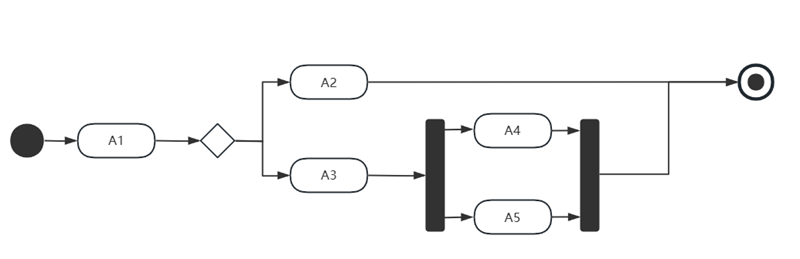

- 知识点 Keypoints
-
类图 Class Diagram用例图 Use Case Diagram
- .展现了一组对象、接口和协作和他们之间的关系
- 类
-
实体类：永久存在，名词边界类：交互，对话框、窗口、二维码，名词控制类：执行逻辑，业务逻辑，动词
- 属性
- 方法
- 接口
- 关系
-
关联关系 Association
. 拥有 关系
. 有时也使用实线直接连接
关联 依赖关系 Dependence. 使用 关系
. 尽量不要使用双向依赖，耦性太强
. 一个类A的方法中使用到了另外一个类B：或作为 局部变量 ，或作为方法的 参数 ；即：类B作为类A的方法的参数或局部变量存在
. 这个使用是临时的、偶然的、弱关系
. 虚线箭头从使用类指向被使用类|被依赖类
依赖 聚合关系 Aggregation. 是一种强关联关系：整体和部分的关系，一个类作为另外一个类的成员对象|属性
. 通常包含多个 成员对象；将多个部分聚合到一起
. 但是部分可以脱离整体而独立存在，如系统由多个功能模块组成，每个模块都可以单独存在
. 球队和多个球员、学校和多个老师、车和多个轮胎、一个发动机、电脑和CPU
. 实线空心菱形open diamond表示，指向聚合的地方|整体类
聚合 组合关系 Compostion. 更强烈，整体和部分的关系；部分以成员变量的形式存在于整体
. 整体可以控制部分的生命周期，一旦整体不存在，部分也就不存在|部分不能脱离整体而单独存在；即：部分随着整体创建而创建，随着整体消亡而消亡
. 将多个部分有机组合到一起；整体部分不可分离
. 代码使用new去创建部分
. 办公楼和楼里的卫生间；办公楼被拆了，卫生间也就不存在了
. 实线实心菱形closed diamond表示，指向组合的地方|整体类
组合 泛化关系 Generalization. 继承，实线空心箭头指向父类
. 如果是抽象类，这样使用<<ClassName>>
泛化-继承 实现关系 Realization. 类和接口之间的关系
. 一个类可以实现多个接口
. 使用关键字implements声明一个接口
. 虚线空心箭头指向父类
实现
- 参与者 Actor
- . 名词
- 用例 Use Case
- . 动名词
- 关系
- . 也有的教材只分为：包含、扩展和继承
-
关联关系 Association
. 表示参与者和用例的关系
. 实线 solid line
泛化关系 Generalization. 表示通用用例General Use Case和Specialized Use Case特殊用例的关系，也是被继承|Parent和继承Children的关系
. 每个自用例都共享父用例的行为，也可以有自己的特定行为
. 参与者也可能存在继承，如新客户、老客户
. 实线空心箭头，指向父用例
包含关系 Include. 基本用例 Base Use Case和包含用例 Include Use Case的关系
. 每次基本用例执行，包含用例也会执行
. 表示一个用例包含另外一个用例作为子功能
. 必然要使用到
. 带箭头的虚线dashed line with an arrow指向包含用例
拓展关系 Extend. 基本用例 Base Use Case执行时，扩展用例 Extend Use Case有时会执行，有时不执行
. 表示一个用例在某些条件下，扩展另外一个用例作为附加功能或可选条件
. 带箭头的虚线指向基本用例
. 业务延申，非必须；可选
. 案例：如早期POS取款必打凭条，现在是可选功能；登录提示信息
-
课程学习和权限：每次学习都必须检查权限课程学习和充值：每次学习不一定都要充币
-
UML实例 - 注意事项
-
方向不要指错
- 概述
- . 强调消息的时间次序
- 概述
- . 也叫协作图
- . 通信图有路径、顺序号
- . 强调收发消息的对象或参加交互的组织机构
- 概述
- . 用来描述一个特定对象的所有可能状态，以及由于各种事件的发生而引起的状态之间的转移或变化
- . 描述行为的 结果
- . 控制流和数据流并存
- . 描述行为的 动作
- 关键路径
- . 耗时最长的路径
- 松弛时间
- . 关键路径 - 当前路径耗时最长的路径
- . 关键路径上所有的活动的松弛时间是0
- 活动A1之后，可能的活动序列为（）。
-
A2、A3、A4和A5A3、A4和A5或A2、A4和A5A2、A4和A5A2或A3、A4和A5
-
 -
A2和A3几个是两条不同的路
- 某软件项目的活动图如下图所示，其中顶点表示项目里程碑，连接顶点的边表示包含的活动，边上的数字表示活动的持续时间(天)，则完成该项目的最少时间为（ ）天。活动F-G的松弛时间为（ ）天。
-
-
关键路径 = ADFHJ = 37天FG所在路径 = ADFGJ = 28天，其松弛时间 = 37 - 28 = 9天
- 某软件项目的活动图如下图所示，其中顶点表示项目里程碑，连接顶点的边表示包含的活动，边上的数字表示活动的持续时间(天)。活动E-H 最多可以晚开始（ ）天而不影响项目的进度。由于某种原因，现在需要同一个工作人员完成 BC和BD，则完成该项目的最少时间为（ ）天。
-
-
关键路径有两条 = ABDGFJ = ABCEFJ = 18天EH所在路径 = 16，所以可以晚 18 - 16 = 2天先完成BC再完BD，总时间 = 3 + 18 = 21天先完成BD再完BC，总时间 = 2 + 18 = 20天∴ 最少时间 20 天
- 概述
- . 构件之间的组织和依赖
- . 专注于系统的静态实现视图
- . 是类图的物理实现
- 概述
- . 显示系统中软件和硬件的物理结构